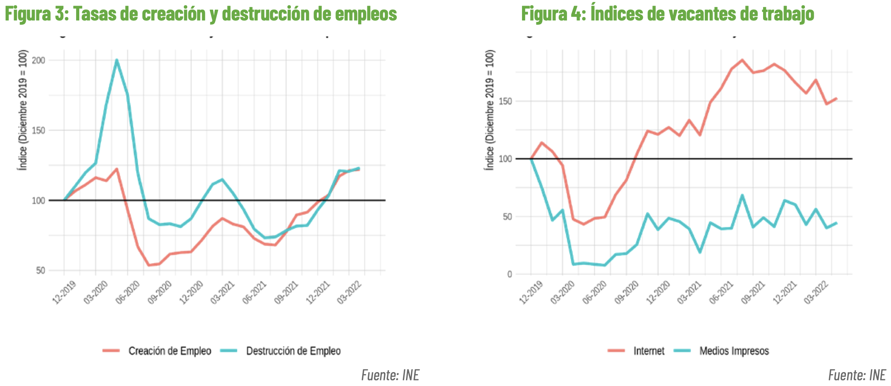
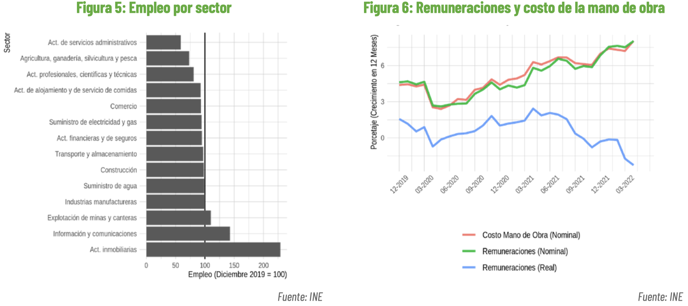

¿Brotes verdes de normalización del mercado laboral?
Publicado en la Revista Observatorio Económico de la Facultad de Economía y Negocios de la Universidad Alberto Hurtado
El Instituto Nacional de Estadísticas publicó las cifras más recientes del mercado laboral (trimestre móvil terminado en mayo 2022) y el panorama, posterior a los peores momentos de la pandemia del COVID 19, pareciera ser auspicioso cuando uno observa la tasa de desempleo.
En efecto, luego que por un año, entre mayo de 2020 y mayo de 2021, la tasa de desempleo se situara en cifras de dos dígitos (con un máximo de 13%), el levantamiento de las medidas de confinamientos más estrictas y la paulatina normalización de varias actividades económicas generó un rápido retroceso hasta que esta fluctúe por varios meses consecutivos alrededor de niveles similares a los observados antes del inicio de la pandemia (ver Figura 1, línea sólida).
¿Quieren decir de acuerdo con estas cifras de que el mercado laboral ya se normalizó completamente? Lamentablemente la respuesta más probable sea aún no. Es importante tener presente que la tasa de desempleo es un indicador parcial del estado del mercado laboral y que las señales son en realidad mixtas y eventualmente se inclinan hacia un reciente y paulatino debilitamiento de las condiciones del mercado.
Por un lado, la pandemia del COVID 19 empujó a muchos trabajadores fuera de la fuerza laboral, cayendo hasta algo más de diez puntos porcentuales en el peor momento de la emergencia sanitaria. Si bien la fuerza laboral se ha ido recuperando, en línea con la mayor movilidad y el retorno a la actividad económica, actualmente está aún 3,2 puntos porcentuales debajo de lo observado en meses previos a la pandemia, lo que significa que tenemos más de 170 mil trabajadores que no han retornado al mercado laboral. Si tomamos en cuenta aquellos individuos que se encuentran fuera de la fuerza laboral y que expresan algún tipo de interés por ingresar al mercado laboral, ya sea buscando un empleo o estando disponibles a trabajar, la tasa de desempleo actualmente duplicaría su nivel actual (15,1% vs. 7,8%). Más aún, la tasa de empleo, el ratio entre el número de ocupados y la población en edad de trabajar, aún se encuentra 4 puntos porcentuales debajo de los niveles observados en los meses previos a la pandemia y la tendencia de normalización pareciera haberse debilitado (ver figura 1).
En el contexto actual, este indicador da una mejor perspectiva respecto del estado del mercado debido a que muestra la carga económica que recae sobre los trabajadores respecto de sí mismos, de los desempleados y de los individuos que se encuentran fuera de la fuerza laboral.
En cuanto al empleo, si bien la recuperación de este ha sido marcada en los últimos dos años, aún queda camino por recorrer para alcanzar los niveles pre pandemia. En efecto, de acuerdo con el último dato disponible, el empleo total está aún 2,5% por debajo del mismo registro en diciembre de 2019 (ver figura 2). Esto significa que tenemos poco más de 232 mil por recuperar. Tanto el empleo asalariado como el de cuenta propia han mostrado una importante recuperación hasta niveles similares a los observados en los meses previos a la pandemia; no obstante, en el margen se observa un freno importante en la tendencia que venía mostrando el empleo asalariado (de hecho en mayo 2022 se perdieron algo más de 70 mil empleos netos de este tipo). El empleo por cuenta propia, por el contrario, ha tendido a acelerar sus incrementos en el margen con 80 mil empleos netos creados en el último mes. Algo similar se observa al comparar el empleo formal con el informal. En efecto, mientras el empleo informal aceleró su tendencia de crecimiento en los primeros meses de 2002 y creó 21 mil empleos netos en mayo, el sector empleo formal se estancó en el margen. ¿Marcan un cambio de tendencia los últimos registros de empleo? Lo más probable es que la respuesta sea afirmativa dado el menor dinamismo esperado para la economía en su conjunto en lo que resta de 2022 y en 2023; o al menos no observaremos repuntes en el empleo como los vistos el año pasado. Esto último se nota en un incremento sostenido, y más allá de factores estacionales, de la tasa de destrucción de empleo durante los últimos meses de 2021 y en lo que va de este año, la misma que saltó más de 50% en dicho periodo (ver figura 3).
El hecho que la tasa de creación de empleo esté aún en niveles altos, y muy superiores a los niveles previos a la pandemia, cerca de 25% sobre lo observado en diciembre 2019, claramente ha contenido el mayor debilitamiento del empleo.
Otro signo del estancamiento reciente del empleo viene por el lado de la demanda y se observa en el comportamiento de las vacantes de trabajo. En efecto, después de alcanzar niveles muy superiores a los meses previos a la pandemia (80% sobre diciembre de 2019), desde noviembre de 2021 y hasta mayo de este año los avisos de vacantes publicadas en internet acumulan una caída de más de 16%. En el caso de los avisos de vacantes publicados en medios de prensa escritos, lo anterior es menos evidente, pero sí se observa un estancamiento a partir de 2021, hecho que evitó la recuperación de estos al impacto de la pandemia. Cabe señalar también que aún faltan brechas por cerrar en varios sectores respecto de lo observado antes de la pandemia. De acuerdo con la figura 4, existen aún varios sectores que tienen camino por recorrer en la recuperación del empleo, siendo los más importantes la agricultura, ganadería y pesca, el comercio y la construcción. Habrá que ver qué sucede con estos sectores pasado el invierno y eliminados los típicos efectos estacionales observados en ellos.
Finalmente, otro aspecto importante a evaluar del mercado laboral es el comportamiento de las remuneraciones y del costo de la mano de obra. Este aspecto es importante tomando en cuenta que el costo de vida se ha incrementado considerablemente desde la segunda mitad de 2021.
La figura 6 muestra el índice de remuneración del INE, que miden las remuneraciones por hora pagada de los trabajadores que realizan sus labores en empresas públicas o privadas. Nótese que durante 2020 y más notoriamente en 2021 el crecimiento de las remuneraciones nominales, impulsado por la demanda de trabajo y la escasez de trabajadores, fue suficiente para generar incrementos en el poder de compra de los trabajadores, de forma que las remuneraciones reales también crecieron a tasas positivas (entre 1 y 2% en doce meses). Esto ya no ocurre desde marzo de 2021, donde se revierte la tendencia del crecimiento de las remuneraciones reales debido al incremento sostenido en el nivel de precios (mostrando caídas de hasta 2.6% en el último registro de 2022). En tanto, los costos laborales por hora nominales en los que incurren las empresas públicas o privadas para mantener a sus trabajadores, mantuvieron la misma tendencia que la de las remuneraciones nominales.
En suma, el mercado laboral se dinamizó considerablemente con el levantamiento de las medidas de confinamiento implementadas para contener la pandemia del COVID 19, hecho que posibilitó la recuperación rápida del empleo y una disminución sostenida en la tasa de desempleo. No obstante, aún quedan brechas por cerrar en varios sectores de la economía y la recuperación se ha debilitado en el margen, con mayor destrucción de empleo y una menor demanda relativa por trabajo. En los meses siguientes se espera un menor dinamismo de la economía en su conjunto, lo que sin duda va a definir el rumbo que vaya a tomar el mercado laboral. A lo anterior se suma la pérdida del poder adquisitivo de los salarios por los incrementos sostenidos en el nivel de precios de la economía. Así, la estanflación, esto es inflación con bajo crecimiento, está nublando el panorama y evitando los brotes verdes en el mercado laboral.


